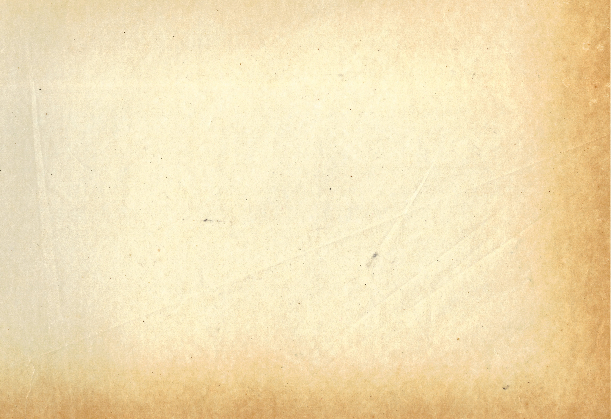

3/18/22
Day 314159... I don't even know...
Its been so many years since I've been trapped in this room. Day by day, I wake to see the same
monotonous grey walls and I dream about escape. Today though, maybe I've finally lost it, but it feels
different. Something strikes my inward eye: the blank tiles before me seem to hold a secret. The first
of the etched stones shines with the passing of the zeroth hour. Then, as the day passes, the walls
begin to hum, to speak, to sing: